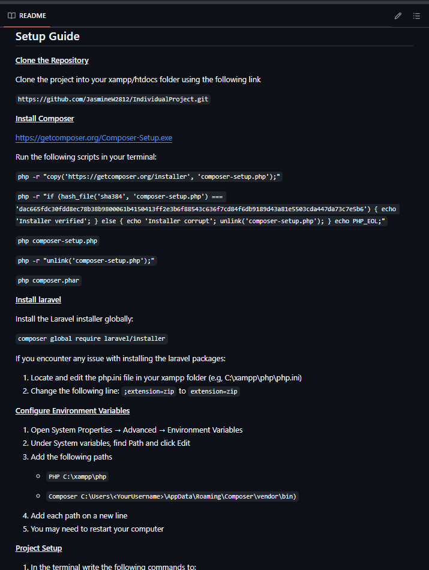

Inventory Management Project
About Project
This was a group project I worked on in my second year of university. I was the SCRUM Master, so I helped the team stay organised, ran stand-ups, made sure we stuck to deadlines, and kept everyone in the loop during the Agile process.
The goal was to build an inventory management system that supports several different types of users:
- Customers can view product availability at their local branch.
- Cashiers can process walk-in orders, which automatically send out invoices and update stock levels.
- Inventory Managers can add new products and manage stock levels for each location.
- Admins have access to full reporting tools, like most popular products and total sales, and can manage all user accounts.
We followed the MVC architecture, using Laravel for the backend and Bootstrap for a responsive frontend.
Key Features
- Product stock lookup by branch for customers
- Order processing and automatic invoicing for cashiers
- Role-based access for inventory managers and admin users
- Live stock updates and tools for inventory management
- Admin dashboard with stats and user management
- Built with Laravel (PHP), Bootstrap, and MySQL
Process
The project followed an Agile methodology, and we broke it into two main sprints: one for core development and one for refining features and usability.
Requirements Gathering
We started by identifying all functional and non-functional requirements and prioritised them using MoSCoW (Must, Should, Could, Won’t) analysis.
Design
We created various diagrams (ERD, use case, and C4 diagrams) to plan the system’s architecture and make sure everyone was on the same page.
Development
The first sprint was all about getting the core functionality up and running – things like user roles, order processing, and stock control. The second sprint focused on cleaning up the UI, testing, and improving the overall user experience.
Testing
We wrote test cases and ran user acceptance testing, as well as accessibility checks using Chrome DevTools and Lighthouse. We also used ZAP to check for any security vulnerabilities.
Set Up
We created a detailed README file that explains how to set up and run the project locally, including database configuration, dependencies, and key environment variables.
Final Product
Here's a quick look at the finished system. It covers all the main use cases and works well across different screen sizes. Overall, I'm really proud of how it turned out, especially considering the time we had.